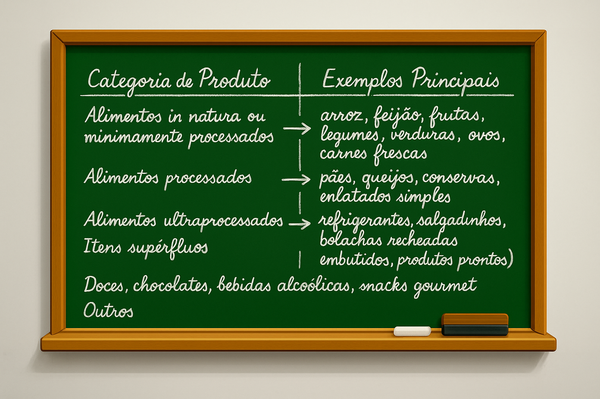
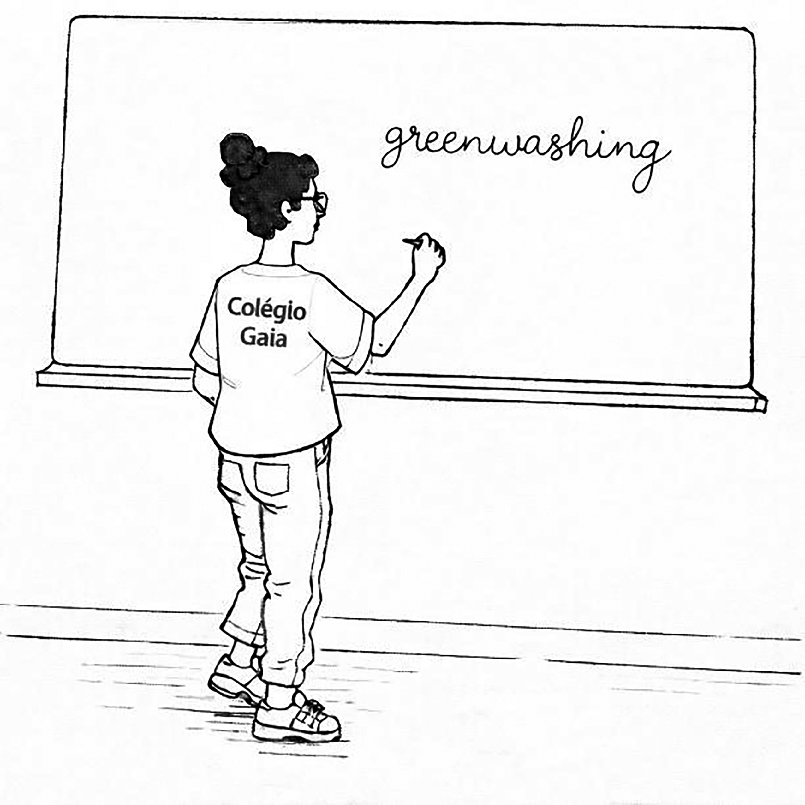

Naquela manhã, Rita foi despertada pelo chamado de sua melhor amiga, Ana Júlia.
— Amiga?! O que aconteceu, algum problema? — atendeu Rita, assustada.
— Ao contrário! Prepare-se para a boa nova. Tá preparada?
— Fale logo!
— Seus problemas acabaram! Consegui uma vaga pra você ministrar Ciências da Natureza em tempo integral. Sabe onde?
— Não faço a mínima ideia. Você tá me deixando super ansiosa!
— Na mesma escola onde eu trabalho.
— Ah não, não acredito... Cê tá falando daquela escola super top e carésima?!
— É isso aí, minha amiga! Prepare seu currículo, porque a entrevista será amanhã, às oito em ponto. Ah, já ia me esquecendo: vá bem bonita, tá? A diretora se preocupa muito com a aparência do seu quadro docente.
— E quais são as minhas chances de passar na entrevista?
— Todas!
— Como assim?!
— Amiga — explicou Ana Júlia —, nessas escolas chiques, quando surge uma vaga, a indicação de uma professora da casa é o que interessa. E como eu sei que você não vai me decepcionar...
Na manhã seguinte, ainda estava escuro quando Rita acordou para cuidar de sua aparência. Escovou o cabelo, passou perfume e maquiou o rosto. Depois, passou um longo tempo tentando combinar algumas peças de roupa. Em seguida, chamou um Uber — não queria estragar a maquiagem.
Na porta da escola, Rita se sentiu atraída pelos grafites que cobriam toda a fachada do prédio, formando um rico mural multicolorido. Os grafites exibiam imagens de tucanos, araras, macacos e lindas palmeiras. No frontispício do imponente hall de entrada, viam-se estampados os seguintes dizeres: Colégio Gaia — conhecimento a serviço da vida.
Ana Júlia recebeu a amiga na portaria, e juntas atravessaram um amplo pátio que dava acesso às salas da coordenação. Em cada corredor da escola havia um conjunto de lixeiras seletivas. Tudo era extremamente limpo, e os jardins, muito floridos. Na coordenação, Rita foi conduzida até a sala da diretora.
— Por favor, sente-se e fique à vontade. É um prazer conhecê-la — disse a diretora, apertando firmemente a mão de Rita. — Meu nome é Marlene, sou a diretora desta escola. A professora Ana Júlia falou muito bem de você, e por isso a convidei para esta conversa.
Folheando o currículo de Rita, Marlene comentou:
— Vamos ver o que temos aqui... Formada em Biologia pela Universidade Federal, foi monitora de Didática do Ensino de Biologia, bolsista em projetos de pesquisa, dois artigos publicados, uma especialização em Ecologia e, atualmente, leciona Ciências da Natureza no Colégio Estadual Benedita Vasconcelos. Muito bem, professora Rita. Mas, e nesse colégio, você é concursada ou contratada temporariamente? — perguntou a diretora, enquanto ajeitava seu volumoso penteado.
p. 44— Lá, eu leciono por contrato temporário, diretora.
— E se os seus horários de aula no Colégio Benedita coincidirem com os seus horários aqui? — interpelou a diretora.
— Acho que não terei esse problema — respondeu Rita, com a voz titubeante.
— Achar não é o bastante, professora. Quero que me responda: sim ou não.
— Não. Não haverá problema algum. Tenho uma amiga lá que divide a mesma disciplina comigo; ela poderá trocar de horário caso haja algum conflito.
— Perfeito! Nesse caso, você começa na segunda-feira. Minha secretária, a Roberta, vai levá-la ao Departamento Pessoal e, depois, dará um giro com você para conhecer as dependências do nosso colégio. Falando nisso — prosseguiu a diretora —, precisamos falar um pouco sobre a filosofia da nossa instituição. Bem, como você já deve saber, esta não é uma escola comum, a começar pelas mensalidades que praticamos. Elas estão bem acima da média, em relação às escolas particulares convencionais. Sabe por quê, professora?
— Por causa da excelência na qualidade do ensino? — arriscou Rita.
— Mais do que isso, professora. Aqui se busca resultados. Os pais dos alunos pagam bem por resultados. Não importa se seus filhos ainda estejam no Fundamental I: todos eles estão olhando para frente, investindo no sucesso profissional de seus filhos. Por essa razão, fazemos questão de que os pais acompanhem de perto a formação que oferecemos aqui. A cada noventa dias, realizamos uma reunião envolvendo pais e professores. É um momento importante para que os pais se sintam mais próximos da formação que oferecemos e, também, para que nossos professores obtenham um feedback sobre suas atuações em sala de aula. Alguma dúvida, professora Rita?
— Nenhuma. Ficou tudo muito claro. Mas tenho uma pergunta, diretora.
— Fique à vontade.
— E com relação às práticas docentes e pedagógicas adotadas aqui no Colégio Gaia?
— Fico feliz que tenha lembrado desse ponto. Esse seria o nosso próximo assunto — emendou a diretora. — Bem, acho que não precisamos gastar nosso tempo relembrando questões teóricas e práticas do processo de ensino-aprendizagem, não é mesmo? Contudo, há alguns pontos que levamos muito a sério. No seu caso, que irá ministrar Ciências da Natureza para as turmas do último ano do Fundamental II, é importante que você seja firme com os alunos.
— Como assim, firme? — interrompeu Rita.
p. 45— Quando eu digo firme, quero me referir a conquistar a confiança e o controle sobre a turma, mas sem perder a meiguice. Afinal, são alunos e alunas acostumados a um estilo de vida muito confortável. Entende o que eu digo?
— Entendi.
— Prosseguindo, você terá liberdade para ministrar todo o conteúdo planejado de acordo com o ritmo e as práticas escolares que escolher. Porém, sempre em conformidade com os contextos das outras disciplinas. Explico: aqui na escola, realizamos reuniões semanais por série. É uma oportunidade para os professores trocarem experiências e ideias sobre, por exemplo, os avanços e as dificuldades vivenciados em suas respectivas salas de aula. Assim, poderão combinar entre si os ritmos e as dosagens dos conteúdos, a fim de que ocorra um crescimento equilibrado no aprendizado de cada uma das disciplinas do período.
— Também é imprescindível que, a cada aula, sejam enviadas atividades para casa. Isso se dá por meio de um caderno individual, que o aluno deve trazer todos os dias, assinado por seus pais ou responsáveis. É uma forma de a família acompanhar e participar da formação que oferecemos a seus filhos.
— Outra coisa: é vedado a todos os professores, independentemente da disciplina que ministram, o direito de reprovar qualquer aluno antes de passar pelo nosso conselho de classe. Fazemos o possível para que não ocorram reprovações aqui.
— Por fim, professora Rita, quero que saiba que temos um carinho especial pela área de Ciências da Natureza. Nosso colégio, além de prezar pela promoção da aprendizagem, pela valorização da diversidade e pela garantia de uma educação inclusiva e de qualidade, também preza pelo desenvolvimento sustentável. Queremos que nossos alunos desenvolvam não apenas posturas competitivas, reflexivas e críticas, mas, acima de tudo, uma poderosa consciência ambiental.
Rita passou o resto da manhã naquele colégio, acertando sua contratação e conhecendo cada ambiente. Ela estava, literalmente, em êxtase. Em sua mente, acontecia um verdadeiro tsunami de ideias. Poder lecionar em uma escola de ponta, ganhando um bom salário e ainda com a certeza de que a educação ambiental era realmente levada a sério naquele colégio — era tudo o que uma professora de Ciências da Natureza poderia desejar.
p. 46Durante aquela semana, Rita dedicou a maior parte do seu tempo à preparação de aulas e de estratégias que pudessem ser inovadoras e atrativas. Afinal de contas, ela precisava causar uma boa impressão. Como assumiria as turmas do 9º ano, optou por dar continuidade à mesma unidade temática que vinha trabalhando com o 9º ano do Colégio Benedita.
E o tão esperado primeiro dia de aula no Colégio Gaia havia chegado.
— Bom dia, 9º ano! Me chamo Rita e sou a sua nova professora de Ciências da Natureza.
A primeira parte da aula foi dedicada às apresentações gerais e às trocas de ideias sobre a importância da preservação da biodiversidade. Após o intervalo, Rita deu início à sua primeira dinâmica, com o propósito de atender ao protocolo do colégio de enviar atividades para casa.
— Aí, pessoal! Peguem seus cadernos individuais, que vou ditar a atividade para fazerem em casa. Todos prontos? Então vamos lá: com a ajuda de seus pais, elaborem uma lista de compras de supermercado — a mesma que habitualmente é feita para abastecer a sua casa. Descrevam cada item comprado, a quantidade de pessoas que residem com você, o número de dias estimado para que a compra dure e o valor total. Obs.: não é preciso informar a marca dos produtos escolhidos.
Com tal atividade, Rita objetivava correlacionar questões sobre consumismo, saúde e meio ambiente, mas de uma maneira que seus alunos pudessem se sentir diretamente envolvidos no contexto.
Na aula seguinte, seus alunos trouxeram as listas de compras.
— Muito bem, turma! Bom trabalho! Agora, vocês vão pegar as listas e separar os itens de acordo com as categorias que vou colocar no quadro.

A turma passou praticamente metade do tempo da aula relacionando os itens de suas listas de compras às categorias informadas no quadro. Após confrontarem os dados, constataram o elevado percentual de alimentos ultraprocessados e também de itens supérfluos em relação aos demais da lista . Nesse momento, Rita aproveitou para intervir.
— Atenção, pessoal. O que vocês acabaram de constatar é muito sério! Com esse hábito de consumo, vocês estão, literalmente, instalando duas bombas-relógio: uma dentro de vocês e a outra no meio ambiente.
— Credo, professora! — comentou uma aluna.
— Isso mesmo! Os alimentos ultraprocessados, geralmente, são pobres em fibras e nutrientes, mas extremamente ricos em açúcares, gorduras saturadas, sódio e diversos aditivos químicos. O consumo contínuo desses alimentos está associado ao desenvolvimento de doenças crônicas, como obesidade, diabetes tipo 2, hipertensão arterial, doenças cardiovasculares, alguns tipos de câncer, depressão e muitas outras. Entenderam agora por que o consumo desses alimentos pode representar uma bomba-relógio instalada dentro dos seus organismos? Isso mesmo! Em algum momento de suas vidas, uma ou mais dessas doenças explodirão dentro de vocês.
— Agora, quanto à bomba-relógio que vocês estão instalando no meio ambiente por causa de seus péssimos hábitos alimentares — prosseguiu Rita — é algo ainda mais sério! Vocês alguma vez já pararam para observar os produtos industrializados que consomem? Todos, absolutamente todos, são embalados, revestidos ou envasados com algum tipo de plástico, metal, papelão ou uma combinação desses materiais. Todos esses materiais não vêm do espaço sideral; são retirados do meio ambiente do nosso planeta.
— E, quando vocês consomem esses alimentos ultraprocessados, suas embalagens viram lixo, montanhas de lixo, que retornam à natureza, matando plantas, animais e causando mais e mais doenças. Só para vocês terem uma ideia: no Brasil, estima-se que menos de 5% dos resíduos sólidos urbanos sejam reciclados. Portanto, meus queridos e queridas alunas, ao consumirem esses produtos, vocês se tornam cúmplices de um verdadeiro ecocídio.
— Ecocídio?! — interferiu um aluno.
p. 48— Sim. Ecocídio. Se homicídio é a morte de uma pessoa provocada por outra, então ecocídio é um dano grave ao meio ambiente provocado por uma pessoa ou por um grupo de pessoas — esclareceu Rita.
— Professora Rita? — chamou o aluno João Vitor, levantando o braço.
— Sim, João Vitor. Qual é a dúvida?
— Se todos esses alimentos industrializados causam tanto mal ao ser humano e ao meio ambiente, por que eles ainda estão sendo vendidos nos supermercados?
— João Vitor, você fez a pergunta de ouro! — parabenizou Rita. — Contudo, não é uma pergunta fácil. Para respondê-la, teríamos que recorrer à história, precisamente a partir do século XVIII, na Inglaterra, quando se iniciou a chamada Revolução Industrial.
— Em linhas gerais, podemos dizer que, após a industrialização, a alimentação humana deixou de ser apenas uma prática local, que envolvia o produtor, o dono da venda e o consumidor, para se tornar um negócio mundializado e de alta lucratividade. A indústria de alimentos passou a movimentar enormes somas de capital, gerar novos empregos, no campo e na cidade, além de mudar por completo os hábitos alimentares em todos os lugares do mundo.
— Experimentar as novidades que não paravam de surgir nas prateleiras dos supermercados e poder armazenar alimentos em casa, sem que eles estragassem em um curto período de tempo, passou a fazer parte da nova cultura alimentar mundial.
— Desse modo, cada vez mais setores da sociedade foram se tornando parte do negócio da alimentação. O produtor passou a ser apenas uma das peças de uma gigantesca engrenagem, composta por poderosos setores financeiros, atravessadores vorazes, grandes transportadoras, empresas de tecnologia, enormes redes de supermercados e engenhosas empresas de comunicação e propaganda.
p. 49— Dentro dessa colossal engrenagem, João Vitor, o único sentido para a alimentação é o lucro que se pode alcançar com a sua comercialização — independentemente das estratégias usadas para atrair o cliente, como é o caso da sinistra e atual prática do greenwashing.

— Green o quê, professora? — perguntou João Vitor, confuso.
— Greenwashing . É uma palavra da língua inglesa usada para denunciar uma prática cada vez mais comum, em que uma empresa tenta disfarçar condutas antiecológicas por meio de propagandas enganosas. Vou tentar resumir para vocês.
— Nas últimas décadas, devido ao aumento dos gravíssimos danos ambientais provocados pelo industrialismo, pelo agronegócio e pelo consumo excessivo, cientistas, ambientalistas e entidades governamentais se uniram com o objetivo de criar leis e fiscalizar qualquer tipo de empresa que atue utilizando práticas nocivas ao meio ambiente.
— Infelizmente, muitas empresas, principalmente aquelas que mais causam prejuízos à natureza e à nossa saúde, investem em estratégias criminosas de marketing, capazes não apenas de esconder os danos que causam ao meio ambiente, mas também de criar uma falsa imagem de si mesmas por meio de rótulos enganosos colocados em seus produtos, levando consumidores ecoconscientes a comprar sem qualquer restrição.
Nos minutos finais da aula, Rita passou a tarefa de casa.
— Pessoal, prestem atenção, pois vou ditar a nossa atividade para casa. Prontos? Então, lá vai: façam um tour pelo seu guarda-roupa e contem quantas roupas e quantos calçados vocês possuem. Depois, tentem separar, mentalmente, a quantidade de roupas e calçados que vocês usam diariamente daquelas que usam muito pouco ou que praticamente não usam. Todos entenderam?
Na aula seguinte, todos trouxeram suas listas contendo o número de roupas e calçados que possuíam, destacando a quantidade de peças consideradas como sendo de uso constante daquelas classificadas como de pouquíssimo uso.
Como resultado da apuração, ficou constatado não apenas um excessivo volume de roupas e calçados por aluno, como também um percentual significativo — praticamente cinquenta por cento do total declarado — que poderia ser enquadrado naquela categoria de roupas quase não utilizadas.
De forma semelhante com que lidou com as listas de compras na aula anterior, Rita aproveitou a situação para inserir seus alunos dentro da cena como coparticipantes, descrevendo os principais impactos ambientais que a indústria da moda pode causar ao meio ambiente, como, por exemplo: o alto consumo de água, o uso indiscriminado de produtos químicos, a emissão de gases do efeito estufa, o descarte excessivo de roupas e o impacto sobre animais e a biodiversidade.
Para encerrar a discussão, Rita comentou os hábitos alimentares e de consumo de roupas demonstrados pela turma, comparando-os aos mesmos hábitos entre famílias consideradas pobres.
p. 50— Vocês sabiam que uma família de classe média alta gasta, só com a alimentação mensal, três vezes mais do que toda a renda mensal de uma família de trabalhadores de baixa renda?
— Nossa, professora! — comentou uma aluna, escandalizada.
— Pois é… — emendou Rita. — E, com relação aos gastos com roupas, uma família de classe média alta gasta quase sete vezes mais com compras de roupas por membro da família, em comparação com uma família de baixa renda.
— Professora? Que tal lançarmos uma campanha aqui na escola de doação de roupas para essas populações de baixa renda? — sugeriu uma aluna.
— É uma excelente ideia, Ana Vitória — respondeu Rita —, mas o que realmente poderia fazer a diferença para o meio ambiente do planeta seria a conscientização das pessoas, em escala mundial, sobre a importância de se consumir somente aquilo que for estritamente necessário para viver. Isso vale para alimentos, roupas e demais tipos de bens.
Entusiasmada com o rumo que aquela discussão tomava, Rita propôs à turma, como atividade para casa, que realizassem uma pesquisa na internet sobre uma filosofia de vida conhecida como minimalismo , dedicada a viver com menos, focando no essencial.
A atividade consistia em fazer anotações sobre o minimalismo e, depois, discutir a ideia com os pais, tomando por base os hábitos consumistas de suas famílias.
As aulas de Rita pareciam ter despertado na turma percepções inéditas. Ela estava, de fato, conquistando a confiança e a amizade de seus alunos.
Na semana seguinte, após a aula, Rita permaneceu no colégio para participar de sua primeira reunião entre pais e professores.
Pais e mães foram chegando e se acomodando em uma ampla sala climatizada, com dezenas de poltronas reclináveis dispostas em sentido oval. No centro, uma imponente mesa de madeira estava repleta de salgados, bolos, sucos e café.
Todos os professores e professoras dos 9º anos já se encontravam na sala quando a diretora Marlene deu início à reunião.
— Boa tarde a todos os pais e mães aqui presentes. Para nós, do Colégio Gaia, recebê-los é sempre um momento de grande alegria. Sabemos o quanto é difícil para vocês deixarem seus afazeres, seja em casa ou no trabalho, para estarem aqui conosco. Por outro lado, temos a certeza de que esses encontros são de extrema importância, pois neles construímos uma ponte entre a formação educacional que oferecemos e a educação de berço que todos vocês, com carinho, proporcionam a seus filhos e filhas. Agora — prosseguiu a diretora — quero que se sintam à vontade para interagir com todos os docentes dos 9º anos aqui presentes. Esta casa também é a casa de vocês.
Rita, sentada ao lado de sua amiga Ana Júlia, exibia um semblante que revelava um misto de entusiasmo e ansiedade.
p. 51E a primeira mãe se pronunciou:
— Boa tarde. Sou a mãe da Yasmim, do 9º B, e tenho notado que o rendimento dela em Matemática tem caído bastante neste bimestre. Isso está me deixando preocupada.
— Fique tranquila — disse o professor de Matemática, conhecido como Marcão. — Essa queda de rendimento é totalmente normal para este período, em função da transição entre as unidades temáticas de Números, Álgebra e Geometria.
Na sequência, outra mãe se anunciou:
— Boa tarde. Sou Roberta, mãe de João Vitor, do 9º A. Quero me dirigir à professora Rita, de Ciências da Natureza.
Olhando diretamente para Rita, Roberta disparou:
— Olha, professora, o João Vitor está adorando as suas aulas. Inclusive, lá em casa, durante as refeições, ele só fala delas.
— Muito obrigada! — agradeceu Rita, toda sorridente.
— Contudo — emendou Roberta —, eu e meu marido estamos um pouco preocupados com essa obsessão do João Vitor pela sua matéria.
— A senhora poderia me dizer o que a preocupa? — perguntou Rita.
— O caso é que o João Vitor, que nunca se preocupou com nada além dos estudos, dos amiguinhos do condomínio e das idas ao shopping, agora desenvolveu uma espécie de “nóia” em relação a tudo o que comemos e compramos. Para ele, tudo o que estamos fazendo em casa está “ecologicamente incorreto” — disse Roberta, fazendo com os dedos o sinal de aspas, em tom irônico.
E, antes mesmo que Rita se pronunciasse em sua defesa, um pai pediu a palavra, levantando o braço.
— Eu tava meio sem jeito de falar, mas, já que a mãe do João Vitor tocou nesse assunto, acho que este é o momento oportuno. O caso é que meu filho, Jairinho, tem aparecido com umas conversas meio atravessadas que têm me deixado encafifado.
— Podemos saber que conversas são essas, Dr. Pedrosa? — atravessou a diretora, incomodada.
— Olha, diretora, não é de hoje que o Jairinho vem me azucrinando, dizendo o que eu devo ou não devo fazer lá na fazenda, por causa de impacto ambiental, poluição e sei lá mais o quê. Esses dias, tive até que dar uma bronca nele, porque ele me deixou meio sem graça. A gente estava indo pra fazenda, e junto com a gente ia o meu gerente. No caminho, o Jairinho começou a falar que eu devia diminuir pela metade minhas lavouras de soja para, no lugar, plantar uma floresta e coisa e tal.
— Sabe o que o meu gerente falou pra mim? — continuou o pai. — “É, patrão… tô vendo que o senhor vai ter que formar uma de suas filhas pra tomar conta das lavouras, porque, pelo jeito, o Jairinho vai é caçar outro rumo.” Aquilo me deixou muito envergonhado. Daí, tive que ser firme com o Jairinho, e falei: “Olha aqui, moleque, você leva uma vida de rei, perto de outros jovens da sua idade. Sabe por quê? Porque o seu pai tirou o sustento da terra, arando e plantando”. E tem mais, falei pra ele, “somos nós, os produtores rurais, que alimentamos o mundo! Você tinha era que se orgulhar do esforço do seu pai, em vez de ficar aí dizendo essas bobagens ecochatas”.
p. 52— Mesmo depois da bronca, o Jairinho continuou me desafiando, dizendo que a professora Rita, na aula de Ciências da Natureza, falou isso, isso e aquilo sobre o agronegócio . Olha, diretora, sem querer desmerecer o trabalho da professora Rita, mas acho que vocês precisam trocar umas ideias sobre certas questões — encerrou o pai de Jairinho.
O desabafo do Dr. Pedrosa deixou Rita em estado de pânico. Em sua mente, passavam duas alternativas: responder àquele homem sob a perspectiva ecológica ou, simplesmente, desculpar-se, agradecer as contribuições e dizer que iria repensar suas posições sobre o assunto.
Com a ajuda de Ana Júlia, que lhe aplicou um discreto beliscão, Rita optou pela segunda alternativa, o que deixou o fazendeiro envaidecido. Em seguida, a diretora esboçou um leve sorriso de canto de boca.
Momentos após a reunião, a diretora Marlene, mesmo com a retratação de Rita diante do Dr. Pedrosa, enviou à coordenação do colégio a ordem para que a professora fosse sumariamente demitida.
— Então, Sr. Koz, em qual categoria do sistema educacional terráqueo o amigo enquadraria tal situação? — provocou-me Anagonno.
— Sinceramente, ainda não sei. Talvez o amigo saiba, já que me provocou.
— Sim. Eu a enquadraria na categoria "acidente de percurso". Nossa querida professora Rita aprendeu — e da pior maneira possível — que a prática do greenwashing não se limitava apenas às empresas envolvidas na produção de alimentos, roupas, veículos e outros bens de consumo, conforme ela mesma havia ensinado aos seus alunos. Pois a própria instituição de ensino que a acolhera, “tão dedicada ao ensino da educação ambiental”, acabou revelando, naquela reunião, sua verdadeira face ao fazer uso da mesma prática dissimuladora do greenwashing.
Nos dias que se seguiram, Rita mal conseguiu colocar os pés para fora do quarto, devido ao trauma que sofrera.